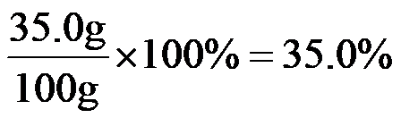
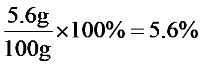
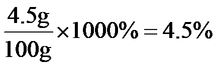

2024年北京市中考化学真题 · 选择题 第1、2、3、4、5题 · 对应解析
1. 下列变化属于化学变化的是
A. 冰雪融化B. 酒精挥发C. 镁条燃烧D. 矿石粉碎
【答案】C
【解析】
【详解】A、冰雪融化过程中只是状态发生改变，没有新物质生成，属于物理变化，不符合题意；
B、酒精挥发过程中由液态变为气态，只是状态发生改变，没有新物质生成，属于物理变化，不符合题意；
C、镁条燃烧过程中有新物质氧化镁生成，属于化学变化，符合题意；
D、矿石粉碎过程中只是形状发生改变，没有新物质生成，属于物理变化，不符合题意。
故选C。
2. 如表列出了某食品的营养成分，其中含量最高的是
项目 | 每100g |
蛋白质 脂肪 碳水化合物 钠 | 35.0g 5.6g 4.5g 180mg |
A. 蛋白质B. 脂肪C. 碳水化合物D. 钠
【答案】A
【解析】
【详解】根据某食品的营养成分表可知，蛋白质含量=

；脂肪含量=
；碳水化合物含量=
；180mg=0.18g，钠含量=。通过计算可知，蛋白质含量最高。综上所述：选择A。
3. 下列物质属于纯净物的是
A. 大理石B. 氯化钾C. 汽水D. 蔗糖溶液
【答案】B
【解析】
【详解】纯净物是由一种物质组成的。
A、大理石的主要成分是碳酸钙，还含有其他杂质，属于混合物，不符合题意；
B、氯化钾只由氯化钾一种物质组成，属于纯净物，符合题意；
C、汽水中含有水、二氧化碳、糖等多种物质，属于混合物，不符合题意；
D、蔗糖溶液中含有蔗糖和水，属于混合物，不符合题意。
故选B。
深入打好蓝天、碧水、净土保卫战，持续优化生态环境。
4. 垃圾分类对保护土壤具有重要意义、下列属于厨余垃圾的是
A. 空易拉罐B. 空矿泉水瓶C. 土豆皮D. 废旧报纸
【答案】C
【解析】
【详解】空易拉罐、空矿泉水瓶、废旧报纸可回收再利用，属于可回收垃圾；土豆皮属于厨余垃圾。
故选C。
5. 为系统治理水资源、水环境、水生态，提倡的做法是
A. 任意排放生活污水B. 防治海洋垃圾污染
C. 农业上过量使用农药D. 景观用水大量使用自来水
【答案】B
【解析】
【详解】A、任意排放生活污水，会造成水污染，错误；
B、防治海洋垃圾污染，有利于系统治理水资源、水环境、水生态，正确；
C、农业上过量使用农药，会造成土壤、水源污染，错误；
D、景观用水大量使用自来水，会浪费淡水资源，错误。
故选B。